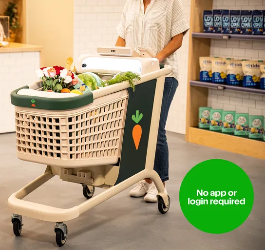
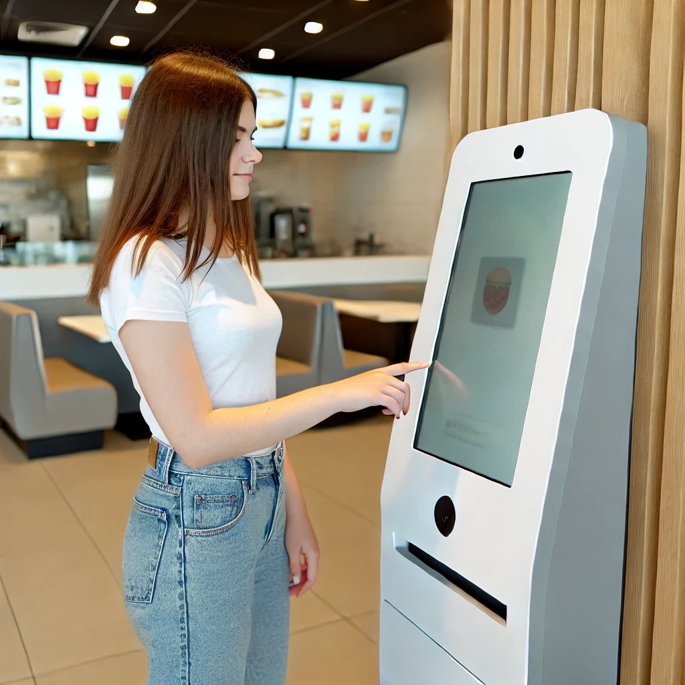
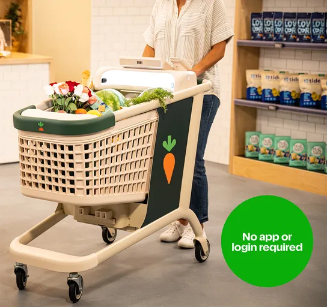
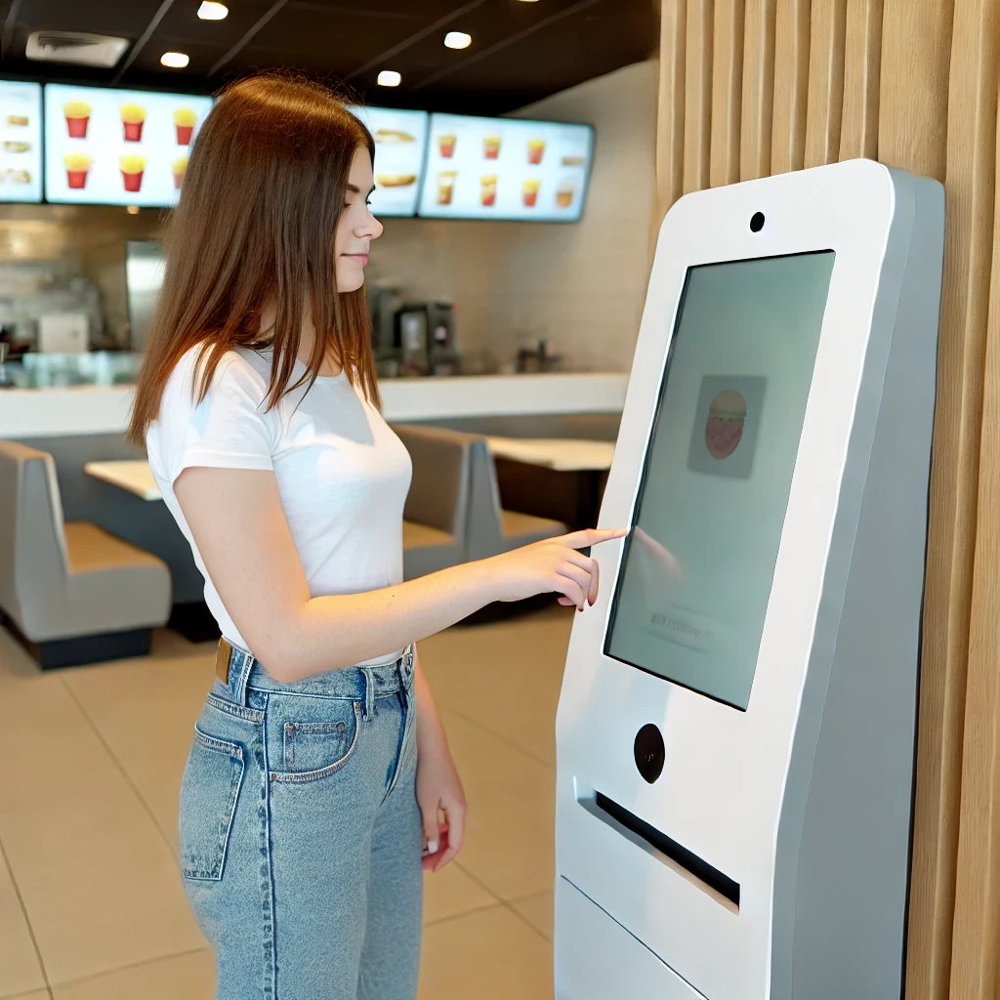

Exploring the Latest in AI: OpenAI, Claude, and Codeium

Dylan Worth
July 17, 2024
OpenAI's Strawberry: A New Way of Processing Data
OpenAI's Strawberry, from what is said, doesn't look like a new module per se but a new way of processing data. While the models are still learning from a data set, Strawberry allows the AI to take the learned information and use reasoning to think and learn from it more effectively.
Claude 3.5: New Feature - Artifacts
We spoke about this in article. Claude was something cool to try, but I wasn't saying take out your credit cards any time soon. Well, any time soon has come, and now Claude has this new feature called Artifacts, which is the ability to run the code it posts. This means it'll have an easier time figuring out bugs, allow you to play around with concepts, and enable fast performance.
Dash/Caper Carts: Smart Grocery Shopping

Both Amazon and Instacart have created smart grocery carts. They both have a display where every item that gets scanned in keeps a running total. They also allow for coupon clipping and user-defined budget preferences to help you not go over. Sensors are throughout the cart and also keep track of the total weight, so they can tell if a thief is trying to hide an item from a sensor. They have been released in a few shopping centers, mainly higher-end grocers. Due to the high cost of replacing all shopping carts with these, it may take time to implement them in your local chains.
AI within Restaurants: Enhancing Customer Experience

The idea isn't to replace all of your laborers with AI but to allow for user preferences to always be met. While cashiers may be phased out, workers are transitioning into different parts of the store. Since computers can have errors, there will always be a place for a human to help troubleshoot and manually take an order. The idea of the kiosks in these stores is for easy promotional tracking, more customization, and improved menu readability.
Codeium: The Free & Open Source Alternative to Co-pilot
Codeium is a free and open-source alternative to Microsoft's Co-pilot. It helps you auto-complete code using AI, so it figures stuff out for you that you might be having trouble with. I'll use his internet name for privacy concerns: Pazaz was my test dummy. He normally uses Co-pilot and pays $120 to use it. This is what he had to say about Codeium:
‣ It is free.
‣ Co-pilot is better with context and using data in larger files.
He said that for the price of $120/year, Co-pilot isn't worth it when Codeium does 90% of what it can do for free and is improving as time goes on.
OpenAI's Strawberry, from what is said, doesn't look like a new module per se but a new way of processing data. While the models are still learning from a data set, Strawberry allows the AI to take the learned information and use reasoning to think and learn from it more effectively.
Claude 3.5: New Feature - Artifacts
We spoke about this in article. Claude was something cool to try, but I wasn't saying take out your credit cards any time soon. Well, any time soon has come, and now Claude has this new feature called Artifacts, which is the ability to run the code it posts. This means it'll have an easier time figuring out bugs, allow you to play around with concepts, and enable fast performance.
Dash/Caper Carts: Smart Grocery Shopping

Both Amazon and Instacart have created smart grocery carts. They both have a display where every item that gets scanned in keeps a running total. They also allow for coupon clipping and user-defined budget preferences to help you not go over. Sensors are throughout the cart and also keep track of the total weight, so they can tell if a thief is trying to hide an item from a sensor. They have been released in a few shopping centers, mainly higher-end grocers. Due to the high cost of replacing all shopping carts with these, it may take time to implement them in your local chains.
AI within Restaurants: Enhancing Customer Experience

The idea isn't to replace all of your laborers with AI but to allow for user preferences to always be met. While cashiers may be phased out, workers are transitioning into different parts of the store. Since computers can have errors, there will always be a place for a human to help troubleshoot and manually take an order. The idea of the kiosks in these stores is for easy promotional tracking, more customization, and improved menu readability.
Codeium: The Free & Open Source Alternative to Co-pilot
Codeium is a free and open-source alternative to Microsoft's Co-pilot. It helps you auto-complete code using AI, so it figures stuff out for you that you might be having trouble with. I'll use his internet name for privacy concerns: Pazaz was my test dummy. He normally uses Co-pilot and pays $120 to use it. This is what he had to say about Codeium:
‣ It is free.
‣ Co-pilot is better with context and using data in larger files.
He said that for the price of $120/year, Co-pilot isn't worth it when Codeium does 90% of what it can do for free and is improving as time goes on.